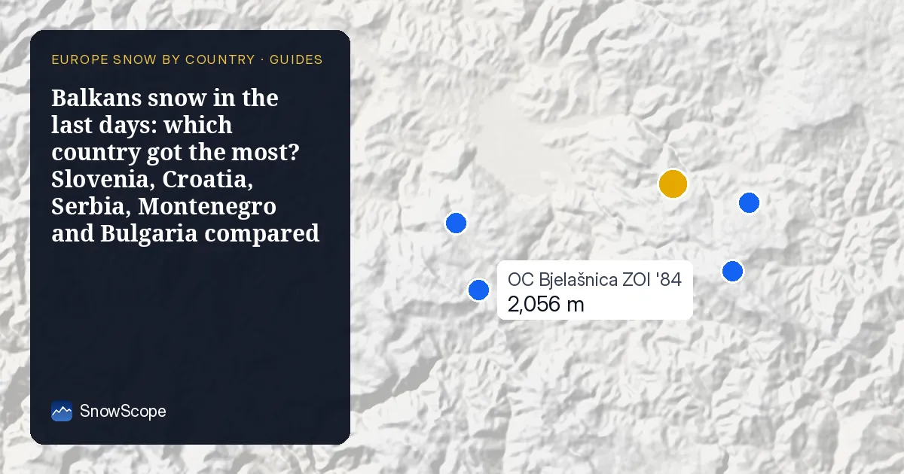
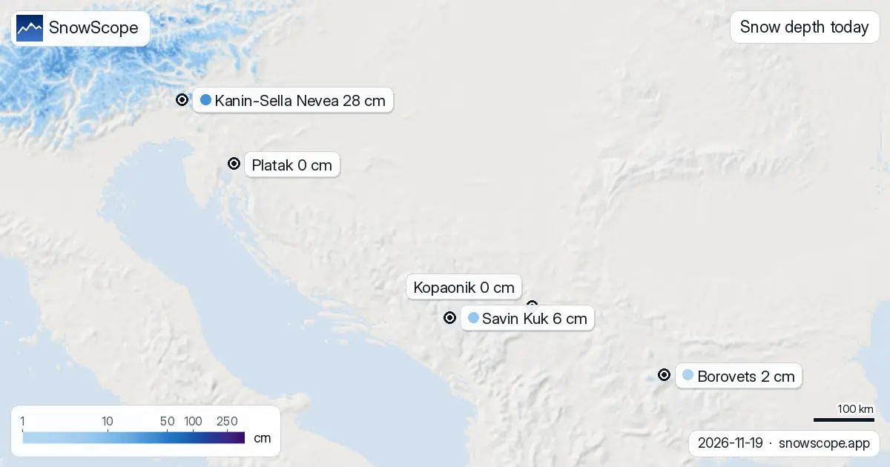

Balkans snow in the last days: which country got the most? Slovenia, Croatia, Serbia, Montenegro and Bulgaria compared
Five countries, one week, very different luck. Between Friday 13 and Thursday 19 November 2026 a cold spell brought the first real snow of the season to the western Balkans, then milder air took most of it away. Slovenia comes out clearly on top: it had the most new snow, it is snowing again today, and 14 of its 19 higher ski areas are white. Bulgaria comes last. Here is the full comparison, country by country.
See the live snow forecast for Balkans in the SnowScope appSnow depth, powder alerts and the 3D map, free.
The short answer
Slovenia got the most, and is the only one of the five with real snow on the slopes today: 28 cm on the upper slopes of Kanin, 20 cm at Kranjska Gora, 16 cm on Vogel. Montenegro comes second today, with 6 cm left on Savin Kuk above Žabljak. Bulgaria has 2 cm at the top of Borovets and Bansko. Croatia and Serbia, which had deep snow last weekend, are bare again.
If you rank by the deepest snow reached at any point this week, the order changes: Serbia's Tornik on Zlatibor reached 39 cm on Sunday 15 November, Slovenia's Gače 38 cm on Saturday 14 November and Croatia's Rudnik Tršće 29 cm the same day. Those were short peaks on modest mountains, and none of them survived to Wednesday.
| Country | Deepest today | Depth | White ski areas | Deepest 13-19 Nov | Most new snow 20-26 Nov | Middle forecast |
|---|---|---|---|---|---|---|
| Slovenia | Kanin-Sella Nevea | 28 cm | 14 / 19 | 38 cm | Kranjska Gora | 12 cm |
| Montenegro | Savin Kuk | 6 cm | 1 / 4 | 18 cm | Savin Kuk | 4 cm |
| Bulgaria | Borovets | 2 cm | 2 / 11 | 8 cm | Borovets | 5 cm |
| Croatia | – | 0 cm | 0 / 3 | 29 cm | Bjelolasica | 7 cm |
| Serbia | – | 0 cm | 0 / 7 | 39 cm | Kopaonik | 1 cm |

Slovenia: the most snow, and the only fresh snow
Slovenia had two snowfalls in a week: Friday 13 November, which left 30 cm on Vogel and 19 cm on Rogla by Saturday, and today, Thursday 19 November, with about 37 cm of new snow on Kanin, 21 cm on Krvavec and 18 cm on Pokljuka. Over the week, Kanin's upper slopes collected about 44 cm, the most anywhere in the five countries.
The high weather station on Kredarica, below Triglav at 2,515 m, measured 30 cm every morning since 14 November. More snow is due on Sunday 22 November in the Julian Alps. Full details are in our Slovenia report, linked below.
Croatia and Serbia: a white weekend, then nothing
Croatia's snow fell almost all on Friday 13 November: about 30 cm on the upper slopes of northern Velebit, 29 cm on Bjelolasica, 19 cm on Platak. The weather station at Zavižan, at 1,597 m, had 16 cm on Saturday and Sunday and bare ground on Tuesday 17 November. Today no Croatian ski area has snow (see the Croatia report below).
Serbia followed the same script further east. Tornik had 34 cm on Saturday and 39 cm on Sunday, the station in Zlatibor town measured 11 cm, and all of it was gone by Wednesday 18 November. Kopaonik, high as it is, only got about 2 cm (Serbia report below).
Montenegro and Bulgaria: small amounts
Montenegro's snow came in small daily doses, and only Durmitor kept it: Savin Kuk collected about 22 cm over the week and still has 6 cm, while Kolašin 1600 and 1450 on Bjelasica are bare (Montenegro report below).
Bulgaria was mostly outside the storm. Borovets and Bansko each picked up about 12 cm in small falls, but neither ever held more than 4 cm on the ground, and Pamporovo and Vitosha are bare (Bulgaria report below).
Bosnia and Herzegovina, the missing neighbour
Bosnia and Herzegovina sits right in the middle of this map and had a week much like Croatia's: some snow on the high mountains last weekend, bare slopes now, and snow forecast for later next week. It has its own report today, linked below.
Taken together, the region's snow this week was a preview. The places that kept it are the highest ones: the Julian Alps on Kanin and Vogel, and Durmitor, where Savin Kuk climbs to 2,175 m.
What comes next, country by country
Slovenia gets the next real snow, on Sunday 22 November: 7 to 13 cm on the upper slopes of Kranjska Gora, about 10 cm in the middle forecast. Croatia and Montenegro have their best chance on Monday 23 November, with a few centimetres: Bjelolasica 7 cm and Savin Kuk 3 cm in the middle forecast. Bulgaria's one chance is the same Monday, 3 cm in the middle forecast for Borovets but up to 12 cm in the highest.
Serbia is the driest: the middle forecast gives about 1 cm on Kopaonik for the whole week to 26 November. For a ski trip in the next ten days, the Julian Alps are the only safe bet for natural snow; everywhere else, wait for December and follow each resort's own opening news.
Tips for skiers
- Most snow this week, and the only fresh snow today: Slovenia's Julian Alps (Kanin, Kranjska Gora, Vogel).
- Croatia's and Serbia's white weekend melted by Wednesday 18 November.
- Next snow: Sunday 22 November in Slovenia, Monday 23 November elsewhere, mostly a few centimetres.
More maps (external sites)
- Live snow map on SnowScope
- Croatia snow: Gorski kotar and Velebit turned white on 13 November, then it melted
- Slovenia snow today: fresh snow on Kanin, Krvavec and Pokljuka, 19 November 2026
- Montenegro snow this week: Durmitor kept it, Kolašin did not (19 November 2026)
- Serbia snow this week: a short white weekend on Zlatibor, Kopaonik still waiting
- Bulgaria snow: Bansko, Borovets and Pamporovo almost bare on 19 November, what next week brings
- Bosnia and Herzegovina snow report, 19 November
About these numbers
Snow on the slopes: the upper slopes of each ski area on SnowScope's daily snow map. Measured snow: weather stations, read at 07:00 local time. Coming snow: the lowest, middle and highest forecast for each resort's top lift.
Cite this report
For research, teaching or the press: the numbers and charts are free to reuse under CC BY 4.0 with this citation.
SnowScope (2026), Balkans snow in the last days: which country got the most? Slovenia, Croatia, Serbia, Montenegro and Bulgaria compared, https://snowscope.app/blog/en/2026/11/balkans-snow-last-days-which-country-got-most-19-november-2026.html, accessed 2026-11-19
SnowScope (Atlas Labs). (2026, November 19). Balkans snow in the last days: which country got the most? Slovenia, Croatia, Serbia, Montenegro and Bulgaria compared. SnowScope snow reports. https://snowscope.app/blog/en/2026/11/balkans-snow-last-days-which-country-got-most-19-november-2026.html
BibTeX
@misc{snowscope2026balkanssnowlastdayswhich,
author = {{SnowScope (Atlas Labs)}},
title = {Balkans snow in the last days: which country got the most? Slovenia, Croatia, Serbia, Montenegro and Bulgaria compared},
year = {2026},
month = nov,
howpublished = {\url{https://snowscope.app/blog/en/2026/11/balkans-snow-last-days-which-country-got-most-19-november-2026.html}},
note = {Published 2026-11-20 00:05 UTC; accessed 2026-11-19}
}· CC BY 4.0 · Methods, data and tools →
Follow Balkans
Free: a message when fresh snow is coming, and the forecast every morning.
More snow reports

SnowScope shows 11 cm in the next week and 22 cm Nov 24-30. Data from 16 Nov.

Slovenia has only 6 % white cover today against Austria's 34 %. Fresh snow in the Julian Alps offers the best chance for early season runs. Data from 17 November.

Bulgaria's mountains face significant snowfall in the next 7 days, with a peak of 10 cm on 28 November. Snow depth today is 1–9 cm at ski resorts; the Rila Mountains lead with 7 cm in 72 hours.